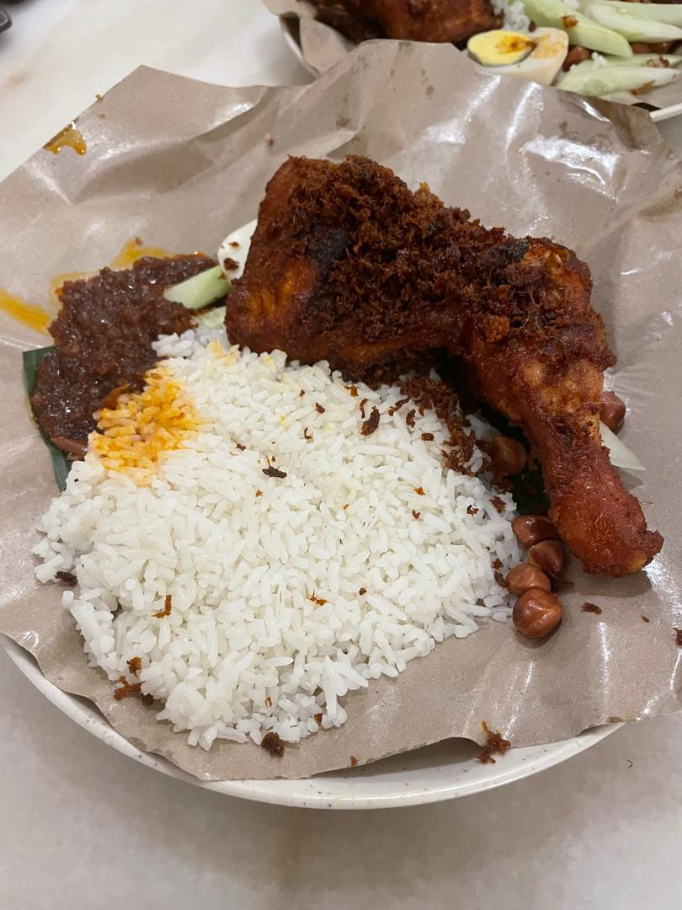
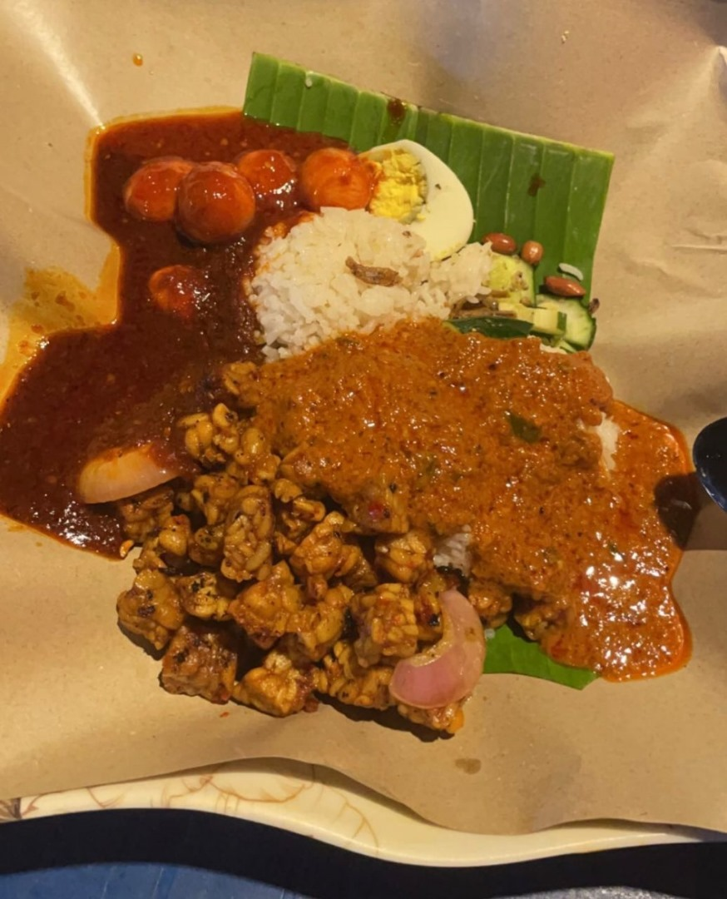
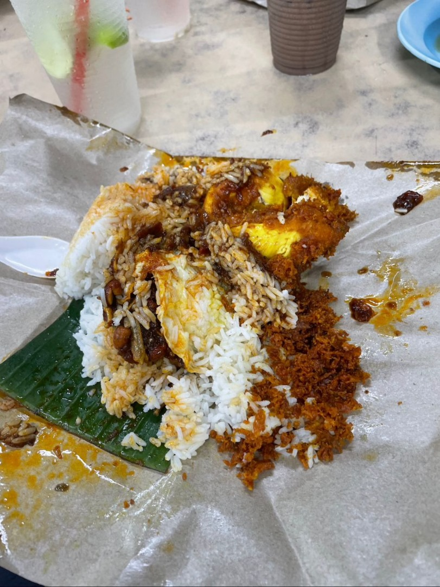
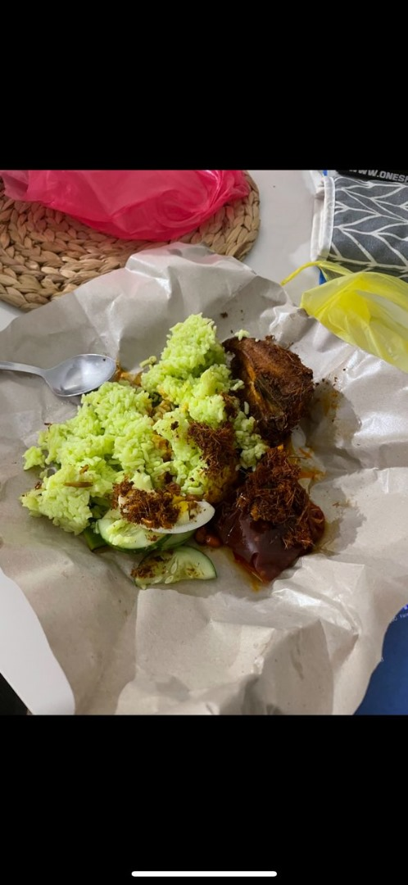
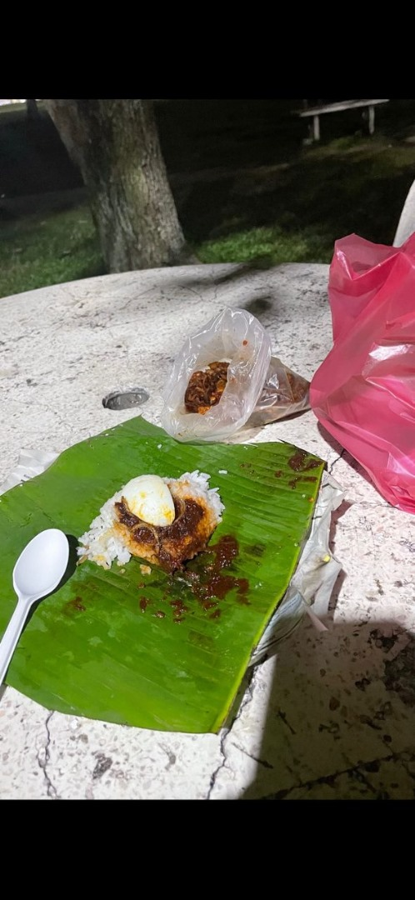
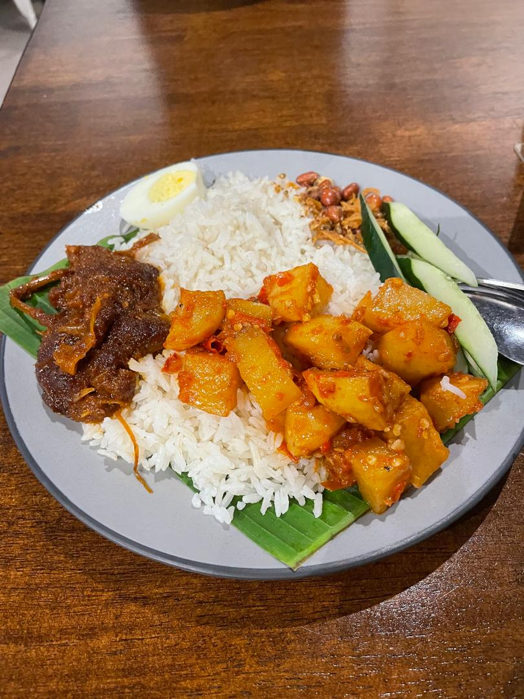
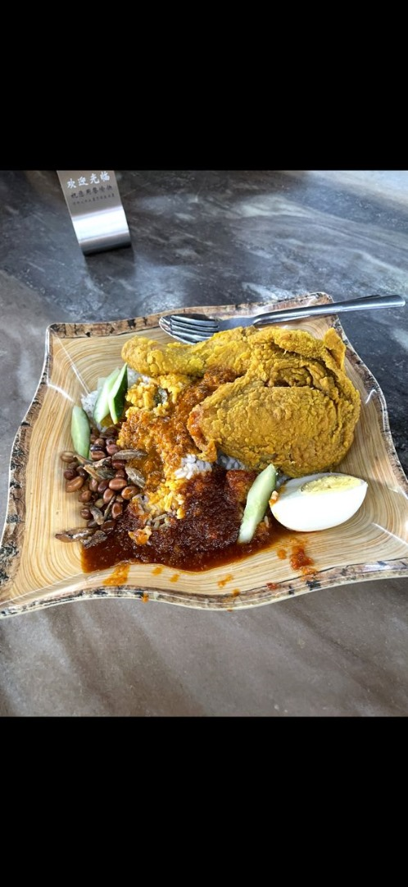
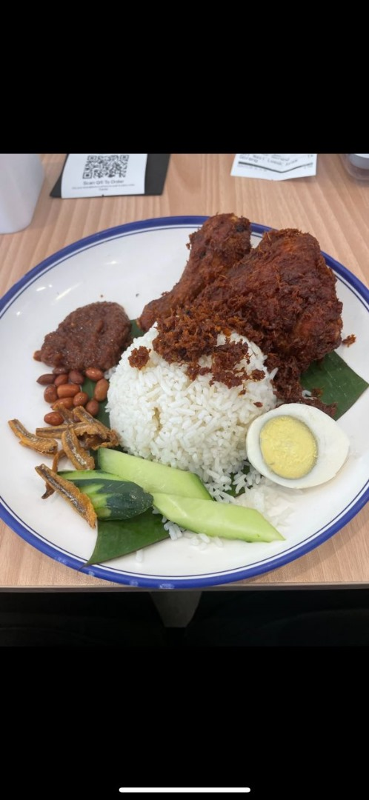

Village Park Nasi Lemak
Rating: 4⭐
RM 8-RM 20+
Address: 5, Jalan SS 21/37, Damansara Utama, 47400 Petaling Jaya, Selangor

NU Sentral Nasi Lemak
Rating: 2.7⭐
RM 6-RM 20+
Address:
3.134081, 101.688283
Kuala Lumpur Sentral, 50470 Kuala Lumpur, Federal Territory of Kuala Lumpur

Jalan 222 Nasi Lemak
Rating: 4⭐
RM 6-RM 9+
Address: No 2, Jalan 51a/223, Seksyen 51a, 46100 Petaling Jaya, Selangor

Nasi Lemak Pandan
Rating: 3.5⭐
RM 2-RM 15+
Address: 3.096773, 101.677747
Taman Desa Busines Park, 58100 Kuala Lumpur, Federal Territory of Kuala Lumpur

Nasi Lemak Burung Hantu
Rating: 3.8⭐
RM 10-RM 30+
Address: 19, Lorong Rahim Kajai 13, Taman Tun Dr Ismail, 60000 Kuala Lumpur, Wilayah Persekutuan Kuala Lumpur

Nasi Lemak Warisan Sambal Opah
Rating: 4⭐
RM 1-RM 15+
Address: 2-1, Jalan USJ 9/5p, Subang Business Centre, 47620 Subang Jaya, Selangor

Nasi Lemak Serunai
Rating: 4⭐
RM 8-RM 20+
Address: 43, Jalan SS 23/15, Taman Sea, 47400 Petaling Jaya, Selangor

Nasi Lemak Puchong Medan Selera
Rating: 2.7⭐
RM 6-RM 20+
Address:

The Nasi Lemak Shop
Rating: 4⭐
RM 10-RM 25+
Address: G10, Oasis Business Center BU4, Changkat Bandar Utama, Bandar Utama, 47800 Petaling Jaya, Selangor